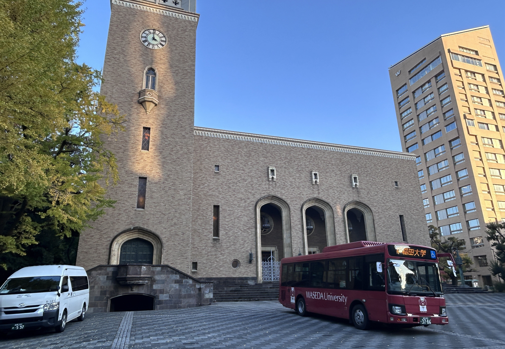
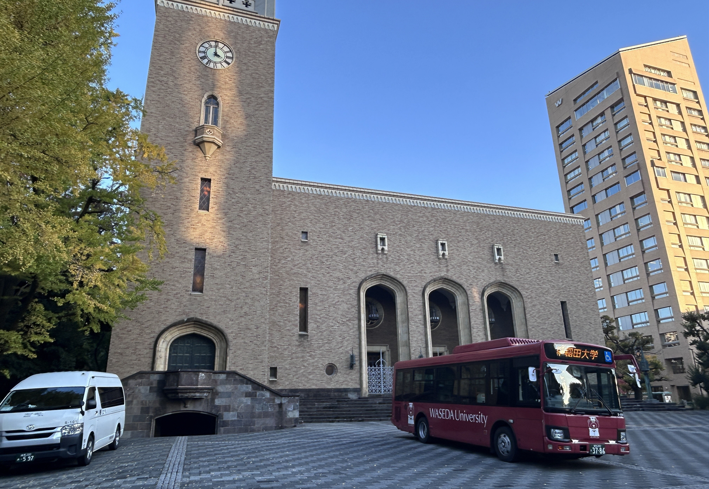

Welcome
 

Trustworthy & Multimodal Medical Intelligence (TMMI)
The Trustworthy & Multimodal Medical Intelligence (TMMI) team, affiliated with the Key Laboratory of Brain Health Intelligent Evaluation and Intervention of the Ministry of Education (BIT) and Liu's Lab (Waseda). We focus on privacy-preserving AI for healthcare, developing trustworthy AI methods and models to enable precision, data-driven medicine while protecting sensitive medical data.
The current research focuses on the early screening and diagnosis of brain-cardiovascular health.
Research Directions
- Trustworthy Medical AI Modeling
We develop trustworthy AI models to address challenges in security, privacy, reliability, interpretability, fairness, and auditability in real-world deployment. For example, we study trustworthy federated learning to enable safe and reliable decision-making using distributed and heterogeneous healthcare data.
- Privacy-Preserving LLMs/LMMs in Healthcare
We explore privacy-preserving LLMs/LMMs technologies that support secure development and deployment in physiological sensing, medical imaging and clinical text. This research enables advanced understanding and reasoning over both structured and unstructured clinical multimodal data.
- Privacy-Preserving Psychophysiological Computing
We investigate AI methods that integrate psychophysiological computing with privacy-preserving technologies. Leveraging federated learning, differential privacy and security multi-party computation, we enable secure acquisition, analysis, and modeling of highly sensitive physiological data.